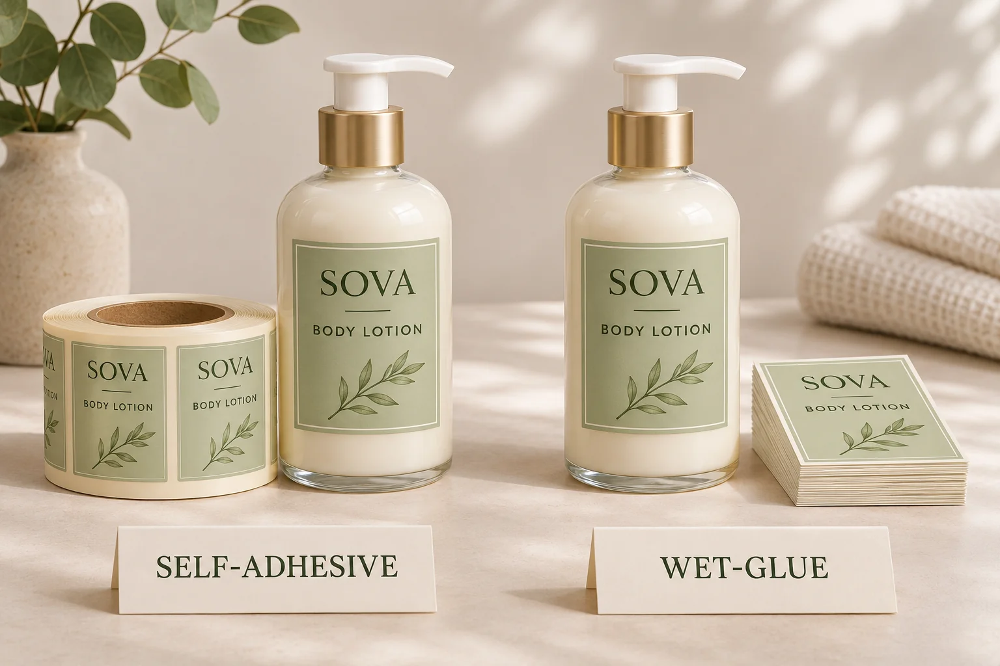
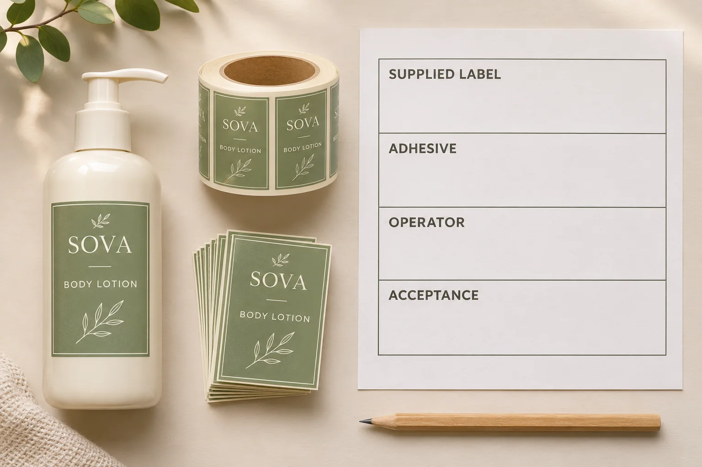

Buy self-adhesive cosmetic labels when the receiving operation supports a label construction that arrives with its adhesive already included. If a supplier or co-packer proposes wet-glue labels, confirm a different work package: separately cut labels, an identified adhesive and a supported operation that brings them together on the container. Choose between acknowledged operating routes before comparing the price of the printed labels.
This matters when two offers look similar on a bottle rendering but supply different inputs to the decorating stage. A stack of printed paper without adhesive is not ready for the same peel-and-apply task as a self-adhesive label. This guide helps a packaging buyer resolve that boundary; it does not assume that YT supplies wet-glue labels, glue, machinery or application services.

Ask where the adhesive enters the job
For the conventional liner-backed self-adhesive route considered here, the label material, adhesive and release liner are supplied as a combined construction. HERMA's material overview identifies those components in its pre-coated materials. The printer still needs to propose the actual construction for your bottle and use conditions. The term self-adhesive does not select a particular adhesive grade.
For the wet-glue alternative, All4Labels describes its cut-and-stack labels as printed labels cut to shape and stacked, with adhesive applied during dispensing at the customer. That describes a separate supply model. It does not establish suitability for your cosmetic pack, a lower total cost or availability from YT.
Ask the supplier to name the proposed method in the quotation. A paper face can be part of a self-adhesive construction, so paper versus film is not the distinction being decided here. Equally, loose labels are not necessarily wet-glue labels: an individually supplied self-adhesive label may retain its own backing. Obtain the construction and incoming-unit description rather than inferring them from a photograph.
Have the application site accept the complete route
Give the operator the actual container reference, surface, label outline, artwork and required components. State whether the proposal is an established method at that site or a new one. For a self-adhesive route, obtain the accepted carrier and dispensing requirements. Use the roll-or-sheet format guide to settle that supplied format after the construction is clear.
For a proposed wet-glue route, identify who supplies the adhesive, who confirms its compatibility with the label and container, and who owns the application procedure. Krones' cold-glue equipment description identifies a dedicated process for cut paper labels, including glue-handling components. A general statement that a site has a labeler does not identify which process it supports.
Keep those questions with the qualified operator and relevant providers. This article gives no glue formulation, dilution instruction, machine setting or universal processing interval. If the proposed work requires additional equipment, preparation, handling or cleaning, have its owner state that scope before the buyer treats it as included.
Complete one adhesive-route handoff brief
Use the same finished-pack requirement for both proposals. The following editorial brief connects the incoming label to the people and evidence needed to make it usable.
| Field | Record from the proposal | Decision to obtain |
|---|---|---|
| Supplied label | Printed construction, label outline, backing or unbacked stack, quantity by design. | What exactly arrives, and what bonding work remains? |
| Adhesive input | Included construction reference, or separately supplied adhesive and its provider. | Who confirms the proposed label, adhesive and container combination? |
| Operating route | Named site, supported method, work scope and incoming-unit requirements. | Who accepts the inputs and completes the application job? |
| Finished acceptance | Representative pack, intended handling, reviewers and open conditions. | What evidence supports releasing this specific combination? |
First obtain the supplied-label description. Next identify the adhesive input and its provider, then ask the application site to acknowledge the combination and work scope. Finally agree the representative finished-pack review before comparing complete quotations. The result is an accepted route or a list of unresolved handoffs, not a universal ranking of technologies.
Hold the choice if the adhesive stage is ambiguous, no operator accepts the proposed method, or an attractive mockup is the only finished-pack evidence. A sample made with a different adhesive or application method should be identified as preliminary. The line-trial brief helps define a subsequent operating review; it does not turn another site's result into approval for yours.

Compare the work included, then the price
Request costs against the same container, designs, quantities, receiving point and required outgoing pack. A self-adhesive label quote may cover the printed construction while excluding application. A wet-glue label quote may cover cut printed labels while leaving adhesive and application as separate items. Ask each provider to confirm its actual inclusions; neither example is a rule for every quotation.
Include separately quoted supplies, setup, samples, application, inspection, agreed handling and delivery where relevant. Leave an unknown cost open until someone answers it. Do not record excluded work as free or infer an economic threshold from order quantity alone.
A hypothetical lotion launch with an accepted self-adhesive application route may sensibly retain it while comparing suitable printed constructions. A hypothetical project whose co-packer proposes an established wet-glue process may investigate that offer if the label, adhesive, pack evidence and complete scope are available. Neither scenario promises faster production, cleaner removal or better recycling.
Confirm the self-adhesive label portion
For cosmetic bottle and jar labels, send the container and surface reference, dimensions, artwork, quantities and the receiving site's proposed method. Include the alternative offer's incoming-label description if the adhesive stage is unclear. Ask which self-adhesive construction and sample scope can be proposed for your operation. The form prepares a message; send files by email or WhatsApp.
Prepare a label route inquiry